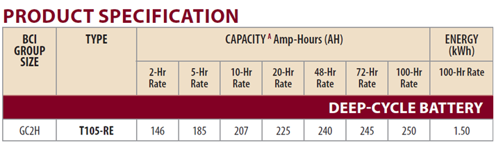
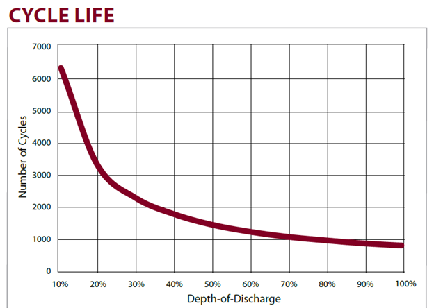
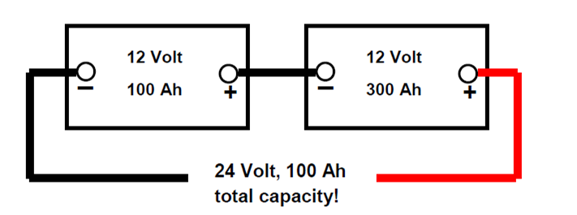
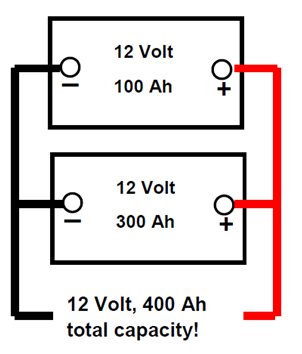
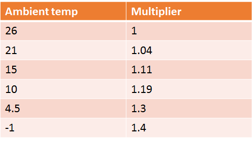

|
Battery Basics
Batteries are the acyls heel of any form of renewable energy. Energy is stored in batteries and batteries are usually the most expensive part of the installation.
- Safety is important when you are working with batteries or in its environment.
- Hydrogen gas that batteries produce when charging is very explosive.
- High temperature conditions could be problematic and shorten the battery life.
Types of Batteries
There are two types of batteries namely:
- Primary – these are used once and thrown away e.g. your torch batteries.
- Secondary – these are also known as rechargeable batteries. These are used for renewable energy.
- Automotive(SLI) – also known as “starting batteries – shallow cycle secondary batteries designed to provide powerful short burst of energy e.g. your vehicles. These batteries should be discharged to 10% of their capacity to prevent rapidly shortening its useful life.
Automotive batteries must never be used for PV systems!
Battery Terminology
Battery cycle
The term is typically used to specify a battery's expected life, as the number of charge cycles affects life more than the mere passage of time. Discharging the battery fully before recharging may be called "deep discharge"; partially discharging then recharging may be called "shallow discharge".
In general, number of cycles for a rechargeable battery indicates how many times it can undergo the process of complete charging and discharging until failure or it starting to lose capacity. The cycle life is the number of complete charge/discharge cycles that the battery is able to support before that its capacity falls under 80% of its original capacity.
Capacity ( Ah) The unit of capacity is the ampere-hour.
Ampere-Hour (Ah) indicates how much electrical energy the battery will contain. The ampere-hour is the product of the amount of current a battery will deliver and the time over which it will deliver this current. For example, a battery with a capacity of 100 ampere-hours will deliver 1 ampere for 100 hours. The same battery will deliver 10 amperes for 10 hours, or 100 amperes for 1 hour.
Rate of Charge or Discharge (C/number)
Expressed in terms of the battery's capacity. The charge or discharge rate is expressed in amperes, as the battery's rated capacity (C) divided by a time factor (T). This time factor is the amount of time during which the battery is cycled.
As an equation it looks like this:
- I = C / T where:
- I = Rate of charge or discharge expressed in amperes.
- C = Battery's rated capacity expressed in ampere-hours.
- T = Cycle time period expressed in hours.
Example
The Trojan T105 has a 225 Ah capacity

- @C20 or the 20-Hr Rate
- 225 ÷ 20 = 11.25 A for 20 hours
It will deliver 11.25A for 20 hours before reaching the minimum voltage.
- @C100 or the 100-Hr Rate
- 250 ÷ 100 = 2.5 A for 100 hours
State of Charge (Soc) Amount of the battery's electric power is available for use.
- 100% state of charge - Entire capacity available.
- 50% state of charge. - Half its capacity removed.
- 0% state of charge - Entire capacity withdrawn
The state of charge of a battery is important because it tells us when it is discharged and needs recharging. It also tells us when the battery is full and when to stop recharging
Depth of Discharge (Dod)
Dod is an alternate method to indicate a battery’s State of charge (SOC). The Dod is the complement of Soc. As the one increases the other decreases. Soc units are percent points 0% = empty 100% = full). Dod can use Ah units (e.g. 0= full, 50 Ah = empty) or percent points (100% = empty; 0% = full). As a battery may actually have higher capacity than its nominal rating, it is possible for the DOD value to exceed the full value (e.g.: 55 Ah or 110%), something that is not possible when using state of charge. The cycle life and depth of discharge are very important measures for a battery.
The lower the Dod the higher the cycle life see example below.

If you let the battery discharge too much you shorten its life span and reduce the number of cyles. The Dod is directly linked to the number of cycles of a battery
Battery Bank Configuration
Series - Cells in Series for Voltage increase
Connect the batteries in series to increase the voltage. The capacity of the bank is the same capacity (Ah) of the battery with the lowest Ah. The Voltage is the sum of the Voltage of the batteries in the bank.
Connect the positive to the negative and vice versa.

Parallel - Cells in Parallel for Capacity increase
Connect the batteries in parallel would increase the capacity (Ah). The Voltage of the bank is the
same but the capacity Ah is the sum of the capacities of the battery bank.

Battery Bank Sizing
Factors affecting the design of the battery bank are
- Inverter Efficiency – A 1000 Watt-Hours(Wh) battery could for example lose 100 Wh due to inverter efficiency. Thus to have 1000 Wh for a battery the battery size must be increased to 1 111 Wh (1000/0.9 = 1 111 Wh).
- Temperature - Low ambient temperature can affect the battery’s ability to hold a charge. If your battery bank has to spend long periods of time at ambient temperatures below 25°C, multiply with factors below:

Low temperatures reduces the battery capacity
- Days of autonomy - How many days the battery bank will sustain the daily load when there is little or no sunshine. Here one need to compromise between
- Having energy during overcast spells.
- How much time the generator will run.
- Added cost of a larger battery bank.
The more days of autonomy desired, the larger the battery bank.
As a general rule at least 2 days of autonomy are required.
- Depth of discharge (Dod) – At least 50% Dod is usually used. During a lot of sunny days the actual Dod could be less than 30%!
Batteries are not 100% efficient in converting electrical energy into chemical energy and back again. The array size must be increased to account for energy lost in the storage process. A common battery efficiency is 80%.
Converting battery capacity (Ah) to Whatt Hours(Wh) is: Ah*Voltage = Wh
Formula for battery sizing
Battery capacity (Wh) = DL ÷ IE x TEMP x DA
- DL = Required daily load (e.g. 1000 Wh)
- IE = Inverter efficiency (e.g 0.9 )
- TEMP (e.g = 1 )
- DA = Days of autonomy (e.g 2 )
- Required daily load (e.g. 1000 Wh )
Thus in the example above the required battery capacity = 1000 ÷ 0.9 x 1 x 2 ÷ 0.5 = 4 444 Wh.
Lets take for example a 12 Volt 220 Ah battery its Wh capacity would be 12 x220 = 2640 Wh.
- Thus the number of batteries needed are 4 444 ÷ 2640 = 1.68
- Always round up so one would need 2 batteries which equate to 2 x 2640 = 5280.
- The daily Dod = daily load/inverter efficieny (e.g, 1000/0.9 = 1111Wh)
- Maximum available energy with 80% Dod = 0.8 * 5280 Wh = 4224 Wh
- Days of autonomy = 4224/1111 = 3.8 days
To summarise Battery life is shortened through
- Not enough charging
- Charging with too high voltages
- Too Long time Absorption / charging
- Extreme deep discharge
- Fast discharge
- High temperature conditions
Popular questions
- What is the life expectancy
- How much can it discharge and am I charging it enough.
- What are the guarantees and how complicated is the maintenance
Answers
- Reasons for a shorter life span of batteries could be due to insufficient charging or charging with too high voltages.
- Be careful of discharging the batteries too much or too fast.
- Battery warranties are configured in the favour of battery manufactures -very few offer more than a year warranty
|